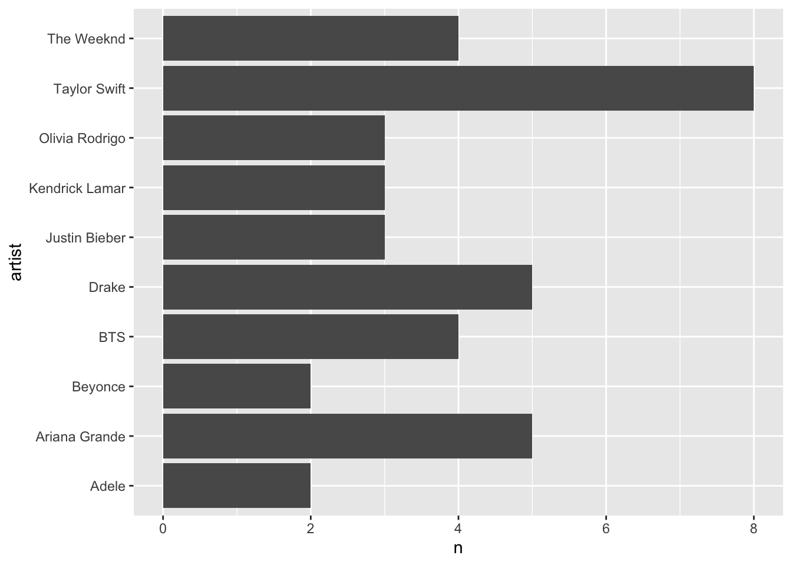
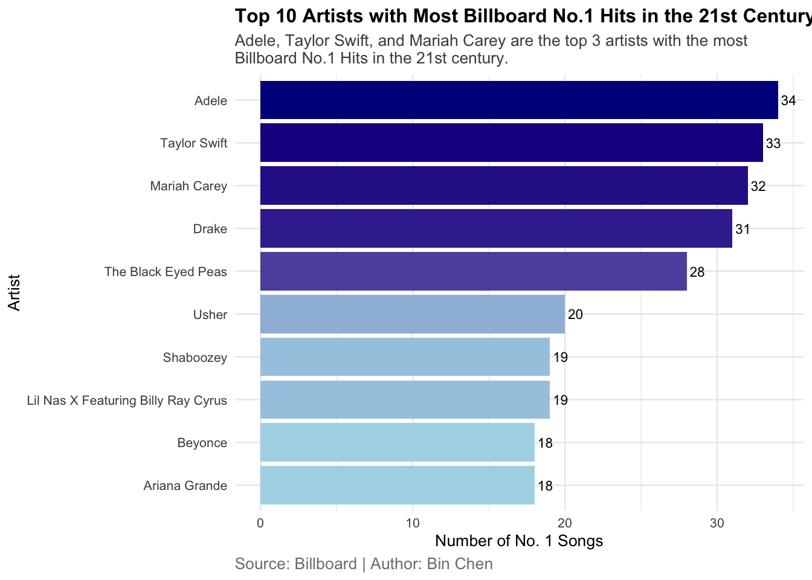

── Attaching core tidyverse packages ──────────────────────── tidyverse 2.0.0 ──
✔ dplyr 1.1.2 ✔ readr 2.1.4
✔ forcats 1.0.0 ✔ stringr 1.5.0
✔ ggplot2 3.4.2 ✔ tibble 3.2.1
✔ lubridate 1.9.2 ✔ tidyr 1.3.0
✔ purrr 1.0.2
── Conflicts ────────────────────────────────────────── tidyverse_conflicts() ──
✖ dplyr::filter() masks stats::filter()
✖ dplyr::lag() masks stats::lag()
ℹ Use the conflicted package (<http://conflicted.r-lib.org/>) to force all conflicts to become errors
13.2 Import Data
This dataset is downloaded from Kaggle, which contains the Billboard Hot 100 chart data from 1958 to 2024.
df <-read_csv("data/hot100.csv")
Rows: 345887 Columns: 8
── Column specification ────────────────────────────────────────────────────────
Delimiter: ","
chr (4): Song, Artist, Weeks in Charts, Image URL
dbl (3): Rank, Last Week, Peak Position
date (1): Date
ℹ Use `spec()` to retrieve the full column specification for this data.
ℹ Specify the column types or set `show_col_types = FALSE` to quiet this message.
13.3 Data Inspection
str(): Structure of the Data
str(df)
spc_tbl_ [345,887 × 8] (S3: spec_tbl_df/tbl_df/tbl/data.frame)
$ Date : Date[1:345887], format: "1958-08-06" "1958-08-06" ...
$ Song : chr [1:345887] "Poor Little Fool" "Nel Blu Dipinto Di Blu (Volare)" "Patricia" "Splish Splash" ...
$ Artist : chr [1:345887] "Ricky Nelson" "Domenico Modugno" "Perez Prado And His Orchestra" "Bobby Darin" ...
$ Rank : num [1:345887] 1 2 3 4 5 6 7 8 9 9 ...
$ Last Week : num [1:345887] 1 54 2 3 5 8 4 6 12 9 ...
$ Peak Position : num [1:345887] 1 2 2 3 5 6 4 6 9 9 ...
$ Weeks in Charts: chr [1:345887] "2" "2" "2" "2" ...
$ Image URL : chr [1:345887] "#" "https://charts-static.billboard.com/img/1958/08/domenico-modugno-x2d-180x180.jpg" "#" "https://charts-static.billboard.com/img/1958/08/bobby-darin-hm6-180x180.jpg" ...
- attr(*, "spec")=
.. cols(
.. Date = col_date(format = ""),
.. Song = col_character(),
.. Artist = col_character(),
.. Rank = col_double(),
.. `Last Week` = col_double(),
.. `Peak Position` = col_double(),
.. `Weeks in Charts` = col_character(),
.. `Image URL` = col_character()
.. )
- attr(*, "problems")=<externalptr>
Here is the description for each column:
Date: the date of the chart
Song: the name of the song
Artist: the name of the artist
Rank: the position of the song on the chart
Last Week: the position of the song on the previous week’s chart
Peak Position: the highest position the song reached on the chart
Weeks in Chart: the number of weeks the song has been on the chart
Image URL: the URL of the song’s cover image
summary(): Summary of the Data
summary(df)
Date Song Artist Rank
Min. :1958-08-06 Length:345887 Length:345887 Min. : 1.0
1st Qu.:1975-03-05 Class :character Class :character 1st Qu.: 26.0
Median :1991-10-09 Mode :character Mode :character Median : 51.0
Mean :1991-10-05 Mean : 50.5
3rd Qu.:2008-05-07 3rd Qu.: 76.0
Max. :2024-12-04 Max. :100.0
Last Week Peak Position Weeks in Charts Image URL
Min. : 1.00 Min. : 1.00 Length:345887 Length:345887
1st Qu.: 25.00 1st Qu.: 7.00 Class :character Class :character
Median : 51.00 Median : 28.00 Mode :character Mode :character
Mean : 50.52 Mean : 32.95
3rd Qu.: 76.00 3rd Qu.: 55.00
Max. :100.00 Max. :100.00
Do we need to clean the data? any issue with the column names? data types?
Rename Columns
# rename all columns to be all lowercase, and ideally single words, no spaces, or snake_casedf1 <- df |>rename(date = Date,song = Song,artist = Artist,rank = Rank,last_week =`Last Week`,peak_position =`Peak Position`,weeks_in_charts =`Weeks in Charts`,image_url =`Image URL`)# check column names and data typesstr(df1)
# weeks_in_chart should be numericdf2 <- df1 |>mutate(weeks_in_charts =as.numeric(weeks_in_charts))
Warning: There was 1 warning in `mutate()`.
ℹ In argument: `weeks_in_charts = as.numeric(weeks_in_charts)`.
Caused by warning:
! NAs introduced by coercion
Min. 1st Qu. Median Mean 3rd Qu. Max.
"1958-08-06" "1975-03-05" "1991-10-09" "1991-10-05" "2008-05-07" "2024-12-04"
# which artist has most appearances in the hot-100 charts?table(hot100$artist) |>sort(decreasing =TRUE) |>head(10)
Taylor Swift Drake Elton John Madonna Kenny Chesney
1574 932 888 856 782
Tim McGraw Morgan Wallen Keith Urban Stevie Wonder Rod Stewart
749 731 674 659 657
Multiple Variables
Which artist appeared most
hot100 |>filter(rank ==1, date >"2015-01-01") |>distinct(artist, song) |>group_by(artist) |>summarise(n =n()) |>arrange(-n) |>head(10) |>ggplot(aes(x = artist, y = n)) +geom_col() +coord_flip()

Which song (song & artist) has been on the charts the most?
count(artist, sort = TRUE) is equivalent to group_by(artist) |> summarize(n = n()) |> arrange(desc(n))
13.6 Data Visualization
Bar Chart
Bar chart is used to show the frequency of each category. Bar chart is a good choice when you want to show the relationship between a numerical variable and a categorical variable (e.g., song, artist).
# bar chart to show the top 10 artists with most appearances in the hot-100 chartshot100 |>filter(rank ==1, year(date) >=2000) |>group_by(artist) |>summarize(appearance =n()) |>arrange(-appearance) |>head(10) |>ggplot(aes(x =reorder(artist, appearance), y = appearance, fill = appearance)) +geom_col(show.legend =FALSE) +geom_text(aes(label = appearance), hjust =-0.2, size =3) +scale_fill_gradient(low ="lightblue", high ="darkblue") +labs(title ="Top 10 Artists with Most Billboard No.1 Hits in the 21st Century",subtitle =str_wrap("Adele, Taylor Swift, and Mariah Carey are the top 3 artists with the most Billboard No.1 Hits in the 21st century."),x ="Artist",y ="Number of No. 1 Songs",caption ="Source: Billboard | Author: Bin Chen" ) +coord_flip() +theme_minimal(base_size =10) +theme(plot.title =element_text(face ="bold", size =12),plot.subtitle =element_text(size =10, color ="gray30"),plot.caption =element_text(size =10, color ="gray50", hjust =0) )

Line Chart
# Get top 10 artists with the most No. 1 songs (each song counted only once)top10_artists <- hot100 |>filter(rank ==1) |>distinct(artist, song) |># Ensure each song is counted only once per artistgroup_by(artist) |>summarize(appearance =n()) |># Count unique No. 1 songs per artistarrange(desc(appearance)) |># Sort by the number of unique songsslice_head(n =10) # Select the top 10 artists# Print the resulttop10_artists
# line chart to show the number of No. 1 songs for the top 10 artistshot100 |>filter(rank ==1, artist %in% top10_artists$artist) |>group_by(artist, year =year(date)) |>summarize(appearance =n()) |>ggplot(aes(x = year, y = appearance, color = artist)) +geom_line() +geom_point() +labs(title ="Number of No. 1 Songs by Top 10 Artists",x ="Year",y ="Number of No. 1 Songs",color ="Artist",caption ="Source: Billboard | Author: Bin Chen" ) +theme_minimal(base_size =10) +theme(plot.title =element_text(face ="bold", size =12),plot.subtitle =element_text(size =10, color ="gray30"),plot.caption =element_text(size =10, color ="gray50", hjust =0) )
`summarise()` has grouped output by 'artist'. You can override using the
`.groups` argument.